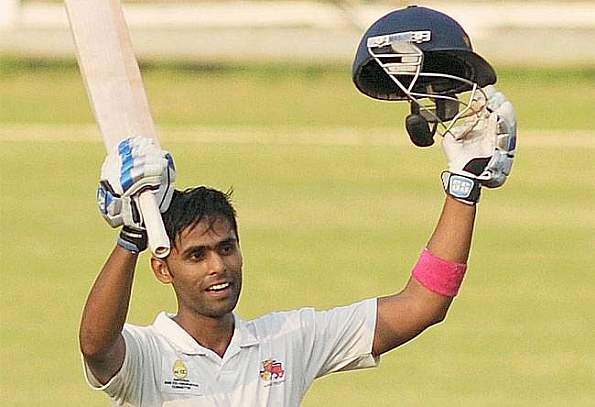

- Rohit Sharma
- Talent – an apparently heartening term that has followed Rohit Sharma around like a shadow; even haunted him at times. It seems to be a burden that the cricketing fraternity has enforced upon him and, after more than a decade in the national setting, he has been weighed down by the label. Harsha Bhogle spoke of whispers in the domestic circuit; of coaches and scouts spotting the effortless, free-flowing stroke-play of a Mumbai teenager. Having cruised through first-class cricket, with an average well above 50, he shot to the limelight when he scored a brisk unbeaten triple-hundred at the Ranji level. Rohit Gurunath Sharma (born 30 April 1987) is an Indian international cricketer and the current captain of the Indian cricket team. Considered as one of the best opening batters of all time,[2] Rohit is known for his timing, elegance, six-hiting abilities and leadership skills. He plays as a right-handed batsman for India national cricket team in international cricket, Mumbai Indians in IPL and for Mumbai in domestic cricket. Rohit also captains Mumbai Indians and the team has won 5 titles under his leadership, the most by any team. Sharma currently holds the world record for the highest individual score (264) in a One Day International (ODI) match and is the only player to have scored three double-centuries in ODIs and also holds the record for scoring most hundreds (five) in a single Cricket World Cup, for which he won the ICC Men's ODI Cricketer of the Year award in 2019. Sharma has received two national honours, the Arjuna Award in 2015 and the prestigious Major Dhyan Chand Khel Ratna in 2020. Outside cricket, Sharma is an active supporter of animal welfare campaigns. He is the official Rhino Ambassador for WWF-India and is a member of People for the Ethical Treatment of Animals (PETA). He has worked with PETA in its campaign to raise awareness of the plight of homeless cats and dogs in India. Talent – an apparently heartening term that has followed Rohit Sharma around like a shadow; even haunted him at times. It seems to be a burden that the cricketing fraternity has enforced upon him and, after more than a decade in the national setting, he has been weighed down by the label. Harsha Bhogle spoke of whispers in the domestic circuit; of coaches and scouts spotting the effortless, free-flowing stroke-play of a Mumbai teenager. Having cruised through first-class cricket, with an average well above 50, he shot to the limelight when he scored a brisk unbeaten triple-hundred at the Ranji level. Rohit Gurunath Sharma (born 30 April 1987) is an Indian international cricketer and the current captain of the Indian cricket team. Considered as one of the best opening batters of all time,[2] Rohit is known for his timing, elegance, six-hiting abilities and leadership skills. He plays as a right-handed batsman for India national cricket team in international cricket, Mumbai Indians in IPL and for Mumbai in domestic cricket. Rohit also captains Mumbai Indians and the team has won 5 titles under his leadership, the most by any team. Sharma currently holds the world record for the highest individual score (264) in a One Day International (ODI) match and is the only player to have scored three double-centuries in ODIs and also holds the record for scoring most hundreds (five) in a single Cricket World Cup, for which he won the ICC Men's ODI Cricketer of the Year award in 2019. Sharma has received two national honours, the Arjuna Award in 2015 and the prestigious Major Dhyan Chand Khel Ratna in 2020. Outside cricket, Sharma is an active supporter of animal welfare campaigns. He is the official Rhino Ambassador for WWF-India and is a member of People for the Ethical Treatment of Animals (PETA). He has worked with PETA in its campaign to raise awareness of the plight of homeless cats and dogs in India.
- Surykumar Yadav

Suryakumar Yadav
- Suryakumar Yadav made his first-class debut against Delhi during the 2010-11 Ranji season. He had a great start to his career as he top-scored for Mumbai with a ell compiled 73 and was the only player to score a fifty in Mumbai's first innings. Since then, he has been a regular member of the side and has scored reasonably well in every season. Impressed by his talent, he received an IPL contract from Mumbai Indians in 2011, for whom he played a few IPL matches until 2013. He moved to Kolkata Knight Riders and was very handy lower down the order and played a few useful cameos for KKR. In fact, he played all the matches in IPL-7, primarily due to his incredible strike-rate.
- Ishan kishan
- Prodigies aren't uncommon in Indian cricket. What's unusual in Ishan Kishan's journey is the fact that it's roots originate in Jharkhand. With MS Dhoni - the biggest and perhaps only noteworthy name to have come out of the newly carved out state, it's no surprise that the young kid took to become a wicket-keeping batsman. A left-handed opener, Kishan's first claim to fame came in 2016 when he was picked to lead the India under-19s for the u-19 World Cup held in Dhaka. Despite a lean run with the bat (73 runs in six innings), in a tournament where Rishabh Pant lit up the scoring charts, he took India to the finals. He was however quick to turn his fortunes around in the domestic Ranji season that was to follow - ending up as Jharkhand's leading run-scorer with 799 runs. That included a career best 273 against Delhi, the highest till date by a Jharkhand batsman. In the post-Dhoni era in Indian cricket, he's thrown his hat into the club of wicketkeeper-batsmen waiting in the wings to replace him. Prodigies aren't uncommon in Indian cricket. What's unusual in Ishan Kishan's journey is the fact that it's roots originate in Jharkhand. With MS Dhoni - the biggest and perhaps only noteworthy name to have come out of the newly carved out state, it's no surprise that the young kid took to become a wicket-keeping batsman. A left-handed opener, Kishan's first claim to fame came in 2016 when he was picked to lead the India under-19s for the u-19 World Cup held in Dhaka. Despite a lean run with the bat (73 runs in six innings), in a tournament where Rishabh Pant lit up the scoring charts, he took India to the finals. He was however quick to turn his fortunes around in the domestic Ranji season that was to follow - ending up as Jharkhand's leading run-scorer with 799 runs. That included a career best 273 against Delhi, the highest till date by a Jharkhand batsman. In the post-Dhoni era in Indian cricket, he's thrown his hat into the club of wicketkeeper-batsmen waiting in the wings to replace him. Prodigies aren't uncommon in Indian cricket. What's unusual in Ishan Kishan's journey is the fact that it's roots originate in Jharkhand. With MS Dhoni - the biggest and perhaps only noteworthy name to have come out of the newly carved out state, it's no surprise that the young kid took to become a wicket-keeping batsman. A left-handed opener, Kishan's first claim to fame came in 2016 when he was picked to lead the India under-19s for the u-19 World Cup held in Dhaka. Despite a lean run with the bat (73 runs in six innings), in a tournament where Rishabh Pant lit up the scoring charts, he took India to the finals. He was however quick to turn his fortunes around in the domestic Ranji season that was to follow - ending up as Jharkhand's leading run-scorer with 799 runs. That included a career best 273 against Delhi, the highest till date by a Jharkhand batsman. In the post-Dhoni era in Indian cricket, he's thrown his hat into the club of wicketkeeper-batsmen waiting in the wings to replace him.